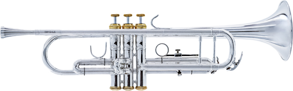
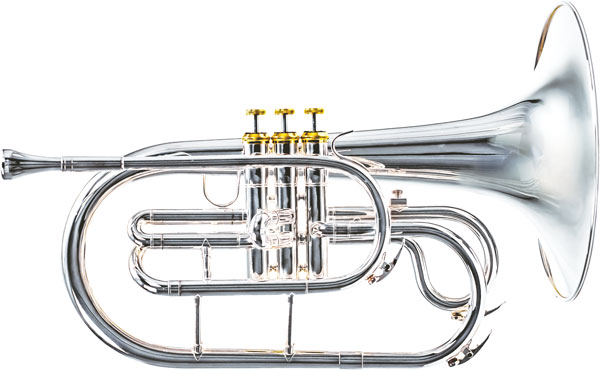
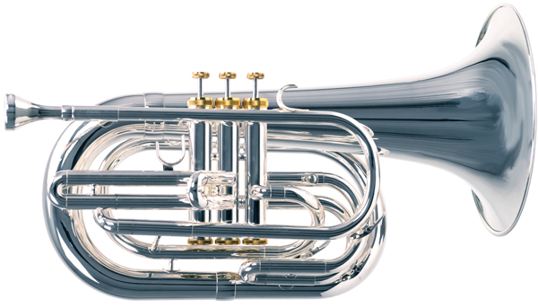
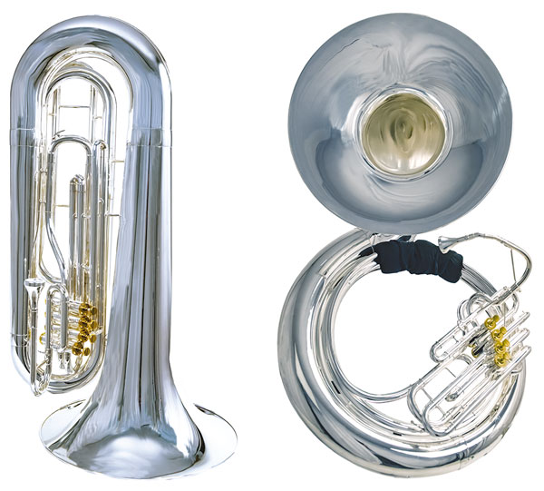

The Trumpet is the highest-pitched brass instrument in the band and the only one of these four that is used in both concert and marching bands. Their design is compact in width, but a little long. It is the most common, especially in an all-brass group for Trumpets to have the melody, which can stand out from everything if the player is loud and good at their instrument. With a Trumpet, you can get a very classic style of brassy sound that most people can recognize and the tone can be altered with mutes.
Mellophones are the marching equivalent of the French Horn and provide a different kind of brassy sound for the ensemble. It is shaped in a very similar manner to a Trumpet, but its bell is much larger and the tubing is less compact. Unlike a French Horn, the player does not need to hold their hand in the bell to act as a mute. Due to this, it has a different sound from a French Horn that can stand out in a large group when played loud with a good tone.
Baritones are a lower-pitched brass instrument that is equally spaced between Tubas and Trumpets. In marching band, the Baritone is played similarly to a Trumpet where the bell faces forward, directly in front of the mouthpiece. This configuration allows it to be marched more comfortably than a standard baritone, but it still weighs about 7-8 pounds.
A Sousaphone is the marching equivalent of a Tuba, the lowest wind instrument in the band. It is shaped in a way that allows it to rest on your left shoulder and wrap around your body, with a bell above your head. There are usually three valves to change notes, which can be removed from the main tubing that leads to the bell. To store a sousaphone, you take the bell off and put the main tubing on the bell to provide a more compact way of storing the instrument.
There are also Contrabass bugles (aka. Contras), which work the same function as a sousaphone, but with very different aesthetics. They look like a traditional tuba, but it rests on the left shoulder, has a lead pipe that comes out and makes a 180-degree turn towards your mouth and the valves are turned 90 degrees from a standard upright configuration. Sousaphones are more common in school settings, especially colleges while Contras are more common in Drum Corps.
